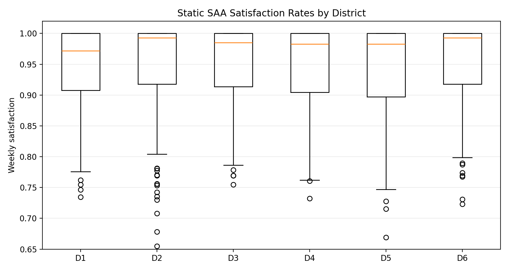
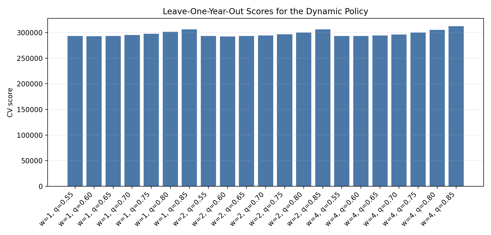
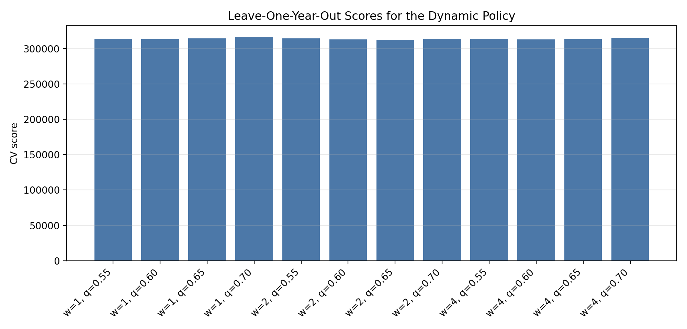

A food bank must commit its weekly order on Sunday night, before it knows what any district will need. Leftovers spoil. Shortfalls are penalised. And no district may be served materially worse than another.
Two warehouses prepare food weekly for six districts. The order quantity for each warehouse is fixed on Sunday night. Demand across the following seven days is uncertain, and it is correlated both in space, because neighbouring districts move together, and in time, because a heavy Monday predicts a heavy Tuesday.
Four costs act against each other. Ordering costs differ by warehouse. Anything left at the end of the week spoils and incurs disposal. Stock held overnight incurs holding cost. Transport is charged per meal per day, and excess sent to a district returns to the warehouse and is transported again the next day.
Above all this sits a regulatory equity constraint: the difference between the best-served and worst-served district's weekly satisfaction rate may not exceed ten percent.
The equity constraint is what makes the problem interesting rather than a textbook newsvendor. Minimising expected cost alone would starve the expensive-to-reach districts, because the cheapest way to raise the average fill rate is to serve whoever is nearest. The fairness rule forbids exactly that, and it binds.
The structure is also genuinely two-stage. The order is a here-and-now decision taken under uncertainty; the daily transportation plan is recourse, taken once the weekly quota is published.
The model is a two-stage stochastic programme solved as an extensive-form sample average approximation. First-stage variables are the two warehouse order quantities. Second-stage variables carry, for every scenario, day, warehouse and district, the meals actually delivered, the excess returned overnight and the stock remaining.
An early version of the template fixed districts one to three to the first warehouse and four to six to the second. That was relaxed: the implementation carries a full two-by-six transportation cost matrix, so the optimiser may use any route when the route is cost-justified.
Extensive-form sample average approximation over 260 demand weeks, setting the weekly order for two warehouses together with the full daily 7 × 2 × 6 shipment tensor. The resulting sparse linear programme is solved with HiGHS.
The extensive form couples every scenario to the same first-stage order, which is what makes the programme large. The per-scenario logic itself is simple.



The static solution reaches a 93.8 percent fill rate against a binding ten percent cap on inter-district satisfaction spread. The constraint binds, which confirms fairness is costly here rather than free.
A quantile forecast policy was then tuned by leave-one-year-out cross-validation, with candidate policies ranked on fairness violations before cost rather than on cost alone. That ordering matters: a policy that is cheap on average while breaching equity in some weeks is rejected outright instead of winning on the average.
The selected policy achieves a 99.2 percent mean fill rate at a 1.7 percent equity gap, with zero fairness violations out of sample. It beats the static solution on both objectives at once, which is the unusual and satisfying part.
The project shows a fairness constraint changing the optimal decision rather than decorating it, and a validation design that refuses to trade equity for average cost. The dynamic policy is tuned exactly as it would be deployed: forecast the week, plan on the forecast, and be judged on the realisation.
Sparse linear programme solved with HiGHS in Python.